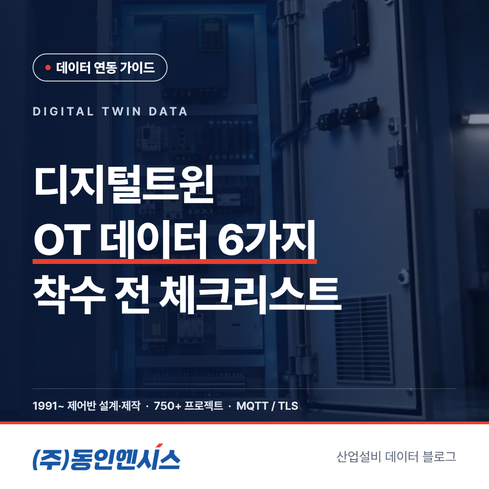
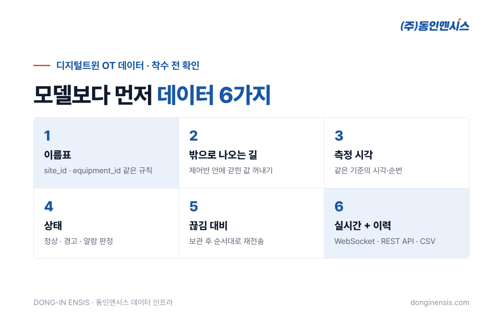
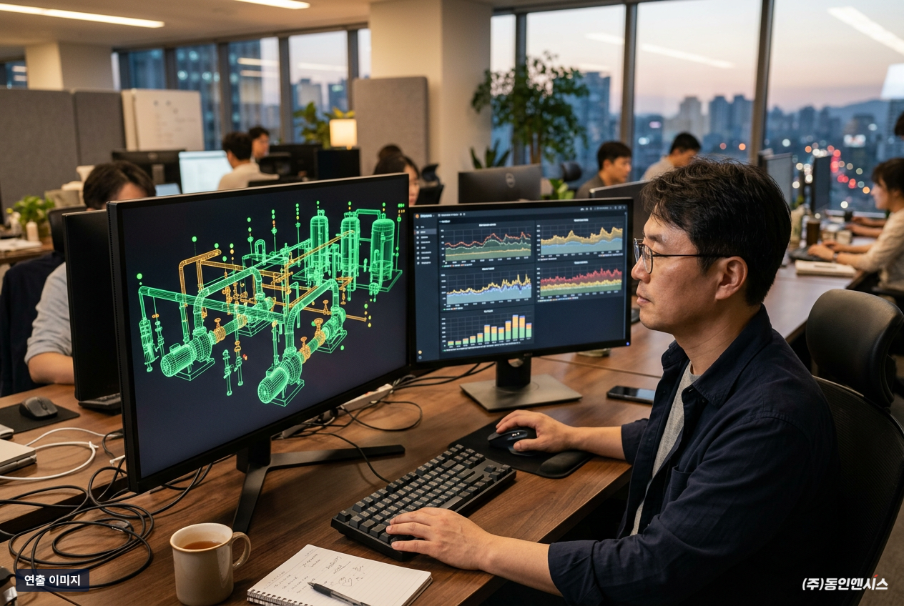
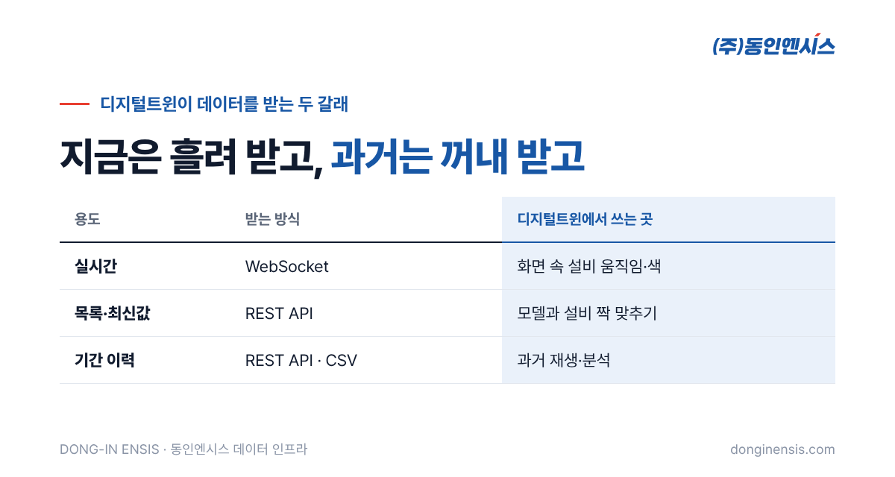
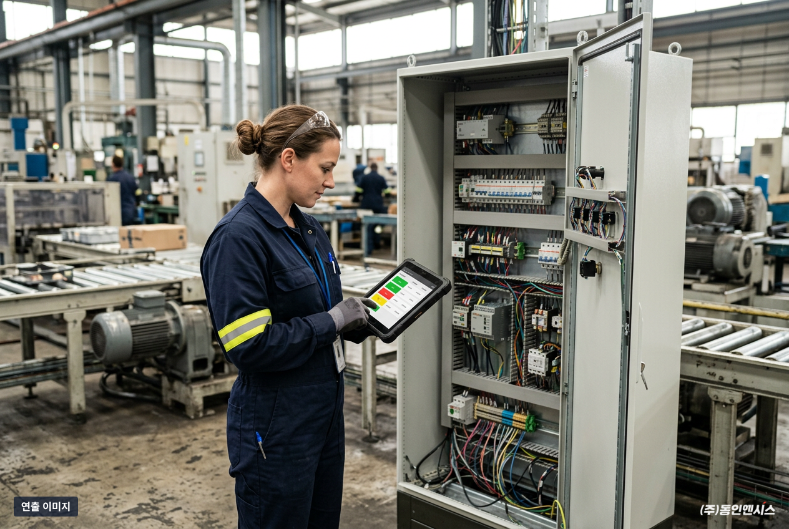

디지털트윈 프로젝트의 첫 화면은 대개 멋진 3D 공장 모델로 시작합니다. 그런데 그 모델에 진짜 설비의 숫자를 흘려 넣는 순간, 많은 프로젝트가 속도를 잃습니다. 선박 기관실부터 해외 공장 라인까지 30년 넘게 제어반을 설계·제작해 온 부산의 동인엔시스는, 이런 정체를 그림이 아닌 숫자 쪽의 병목으로 봅니다. 이 글에서는 디지털트윈 OT 데이터를 준비할 때 착수 전에 확인할 여섯 가지를 체크리스트로 정리합니다.
디지털트윈은 현실의 설비를 화면 속에 똑같이 옮겨 놓고, 현실이 바뀌면 화면도 따라 바뀌게 만드는 기술입니다. 겉모습을 그리는 일은 IT기업이 잘하는 영역이지만, '따라 바뀌게' 만드는 재료는 공장 바닥의 OT(운영기술) 쪽에 있습니다.
문제는 그 재료가 대부분 제어반 안에 갇혀 있다는 점입니다. 모터의 전류와 온도, 인버터의 운전 속도 같은 값은 PLC와 인버터가 설비를 돌리기 위해 이미 쓰고 있지만, 그 값을 바깥 시스템이 쓰기 좋은 형태로 꺼내 주는 장치는 없는 경우가 많습니다. 현장마다 PLC 기종과 통신 방식이 다르다 보니, 연결 작업이 현장 수만큼 반복되기도 합니다.

디지털트윈은 화면 속 설비 하나하나가 현실의 어느 설비인지 짝이 맞아야 합니다. 그러려면 현장의 설비와 센서에 일정한 규칙의 이름표가 있어야 합니다. 같은 펌프를 어떤 자료에서는 '1번 펌프', 다른 자료에서는 'P-01'로 부른다면 모델과 데이터를 잇는 데만 한참이 걸립니다. 이름표 규칙은 프로젝트 초기에 IT기업과 현장이 함께 정해 두는 것이 가장 좋습니다.
동인엔시스가 제공하는 설비 데이터는 사업장(site_id)과 설비(equipment_id)를 기준으로, 센서별 값과 단위, 상태를 같은 형식으로 묶어 보냅니다. 설비가 늘어나도 형식이 그대로라서, 화면 쪽에서 연결 코드를 새로 짤 필요가 줄어듭니다.
두 번째는 가장 근본적인 질문입니다. 원하는 값이 실제로 제어반 밖으로 나올 수 있는지입니다. 오래된 설비는 통신 기능이 없거나, 있더라도 어떤 주소에 어떤 값이 있는지 아는 사람이 없는 경우가 있습니다. 주소표가 남아 있지 않은 오래된 PLC라면, 값의 위치를 찾는 일만으로도 며칠이 걸릴 수 있습니다.
지능형 제어반은 처음부터 설비를 제어하면서 운전 데이터를 함께 모으도록 만들어져, 이 문제를 제어반 단계에서 풉니다. 이미 다른 회사의 PLC가 설비를 돌리고 있다면 그 PLC의 값을 읽어 오는 방식을 씁니다. 이때는 OPC UA를 먼저 검토하고, 어려우면 Modbus TCP, 그것도 안 되면 제조사 전용 통신을 게이트웨이로 받는 순서로 현장에 맞는 길을 찾습니다.

디지털트윈에서 시간은 생명입니다. 같은 순간의 온도와 전류를 나란히 놓아야 설비의 움직임을 제대로 재현할 수 있기 때문입니다. 값마다 측정 시각이 붙어 있어야 하고, 여러 센서의 시각이 같은 기준으로 맞춰져 있어야 합니다. 지능형 제어반의 데이터에는 측정 시각과 순번이 함께 따라옵니다.
화면 속 설비에 색을 입히려면 숫자만으로는 부족합니다. 이 숫자가 괜찮은 수준인지 아닌지를 알려 주는 판단이 함께 있어야 합니다. 동인엔시스의 데이터는 센서마다 정한 기준으로 정상·경고·알람을 나누고, 센서 가운데 하나라도 경고면 그 설비 전체를 경고로 올립니다. 화면에서는 이 상태를 그대로 색으로 표시하면 됩니다. 운전 중인지 멈췄는지를 알려 주는 상태신호도 함께 들어옵니다.
현장 통신은 언젠가 끊깁니다. 그때마다 데이터에 빈 구간이 생기면, 디지털트윈의 과거 재생 화면은 군데군데 멈춘 영상처럼 됩니다. 지능형 제어반은 끊긴 동안의 값을 안에 보관했다가 연결이 돌아오면 오래된 순서로 다시 보내기 때문에, 나중에 보면 기록이 이어져 있습니다.
디지털트윈은 두 가지 데이터를 다르게 씁니다. 지금 이 순간의 움직임은 끊김 없이 흘러 들어와야 하고, 지난 한 달의 기록은 필요할 때 한 번에 꺼내 와야 합니다. 그래서 실시간 값은 WebSocket으로, 설비·센서 목록과 최신값, 기간 이력은 REST API로 받는 구조가 편합니다. 분석 담당자가 먼저 데이터를 훑어보고 싶다면 CSV로 내려받을 수도 있습니다.

동인엔시스는 설비 데이터 인프라를 다섯 단계로 나눕니다. 가장 아래가 현장 설비와 제어이고, 그 위로 통신 연결과 Energient 데이터허브의 통합관리, 웹 화면이 차례로 올라가며, 꼭대기에 AI와 디지털트윈이 있습니다. 이 가운데 아래쪽 단계, 즉 현장에서 믿을 수 있는 데이터를 만들어 정해진 형식으로 올려 보내는 구간이 저희가 가장 오래 해 온 일입니다.
디지털트윈 자체도 함께 들여다보고 있습니다. 2026년 4월에는 kHz 단위로 전기 파형을 잡아내는 고정밀 DAQ와 비지도 학습 AI를 묶은 예지보전 디지털트윈 솔루션을 고도화해 실증하는 작업에 들어갔습니다. 아직 실증 단계인 만큼, IT기업과는 각자 잘하는 구간을 나눠 맡는 방식이 현실적입니다.

Q. 디지털트윈 OT 데이터를 받으려면 기존 설비를 모두 바꿔야 하나요? 아닙니다. 기존 설비를 그대로 쓰면서 제어반만 바꾸거나 새로 다는 것이 기본입니다. 이미 PLC가 있다면 그 값을 읽어 오는 길도 있습니다.
Q. 처음부터 공장 전체를 연결해야 하나요? 설비 1~2대부터 시작해 단계적으로 넓힐 수 있습니다. 작은 범위에서 데이터 형식과 화면 연동을 먼저 맞춰 보는 편이 안전합니다.
Q. 데이터 형식 문서는 언제 받을 수 있나요? 토픽 구조·메시지 형식·태그 규칙은 버전을 붙여 관리하고 있고, 자세한 문서는 비밀유지계약(NDA) 체결 후 공유합니다.
Q. 수집한 데이터는 누구의 것인가요? 누가 데이터를 갖고 어디까지 쓰며 얼마나 보관할지는 프로젝트별 계약에 담습니다.
디지털트윈의 완성도는 화면이 아니라, 그 화면에 흘러 들어오는 디지털트윈 OT 데이터가 얼마나 믿을 만한지에서 갈립니다. 이름표, 밖으로 나오는 길, 시각과 상태, 끊김 대비, 실시간과 이력까지 여섯 가지를 착수 전에 확인해 두면 프로젝트가 데이터 앞에서 멈추는 일을 크게 줄일 수 있습니다.
디지털트윈이나 MES 프로젝트에서 현장 데이터 구간을 맡아 줄 파트너를 찾고 계시다면, IT기업 협업 문의에 프로젝트 개요를 남겨 주세요. 기술 미팅에서 현장 구조부터 함께 살펴보겠습니다. 전화 051-862-3668, 메일 dongin@donginmne.com으로도 연락하실 수 있습니다.
아래 질문 중 하나에 실제 경험으로 답해 본문 적당한 곳에 넣어 주세요. 사람이 직접 쓴 문장이 들어가면 네이버에서 저품질 위험이 줄고 노출에 도움이 됩니다.